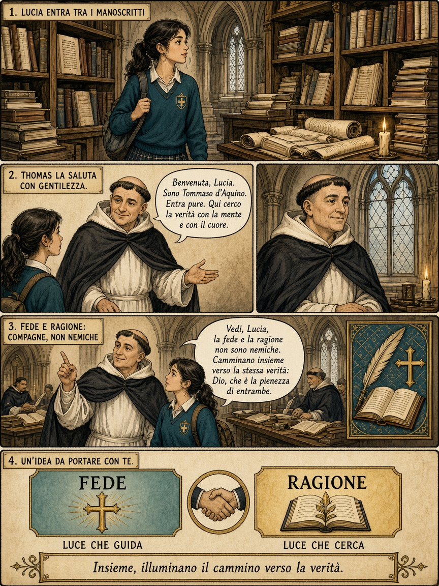

Filosofia · scriptorium
TOMMASO
Le cinque vie
Fede e ragione, le vie verso Dio, la legge naturale: studio ordinato con Lucia e Tommaso.

Filosofia · scriptorium
Le cinque vie
Fede e ragione, le vie verso Dio, la legge naturale: studio ordinato con Lucia e Tommaso.